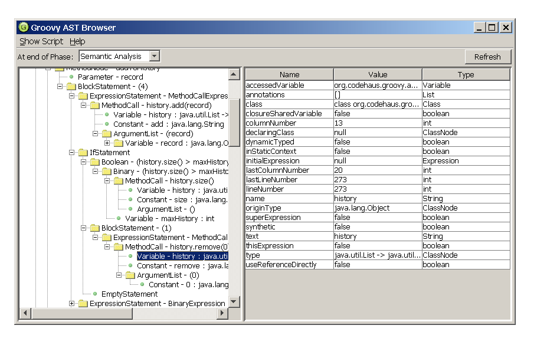
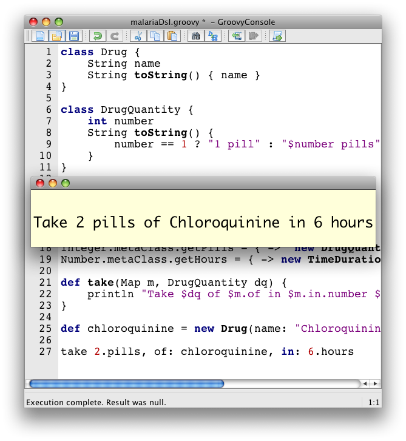

Release notes for Groovy 1.7
IDE Support
Before diving directly into the new features in Groovy 1.7, please let me mention the great progress made in terms of IDE support for Groovy (and also for Griffon, Gradle, Gant or Grails). All the major IDEs (Eclipse, IntelliJ IDEA, NetBeans) provide an excellent level of support for the language. Initially, the Eclipse support was the one lacking the most, but thanks to the hard work of the SpringSource Eclipse team, we now have a great environment for developing mixed Java / Groovy applications with features like cross-language refactoring, Groovy-specific code completion, and more.
New and Improved Eclipse pluginFor more information on the Eclipse support, please have a look at the Groovy Eclipse plugin home page, as well as the notes for the M1 release and M2 release.
New features
Anonymous Inner Classes and Nested Classes
Although oftentimes closures and maps coercion suffice, there are still areas where the lack of Anonymous Inner Classes (AIC) and Nested Classes (NC) can be problematic. That’s why we decided to eventually implement AIC and NC in Groovy 1.7.
Be CarefulThe implementation of AIC and NC follows the Java lead, but you should not take out the Java Language Spec and keep shaking the head about things that are different. The implementation done looks much like what we do for groovy.lang.Closure, with some benefits and some differences. Accessing private fields and methods for example can become a problem, but on the other hand local variables don’t have to be final.
Nested Static Classes
Here’s an example of Nested Static Classes:
class A {
static class B {}
}
new A.B()The usage of static nested classes is the best supported one. If you absolutely need an inner class, you should make it a static one.
Anonymous Inner Classes
Some other examples, this time for Anonymous Inner Classes:
boolean called = false
Timer timer = new Timer()
timer.schedule(new TimerTask() {
void run() {
called = true
}
}, 0)
sleep 100
assert calledMore informationIf you want to learn a bit more about the cases which are currently supported in 1.7, you can have a look at one of our unit tests covering this new feature.
Accessing the Outer Context from a Nested Class
If you are in a nested class Y and the surrounding class is X, then you can access the variable v of X in Java by X.this.v. Groovy does not support this syntax.
Creating Instances of Non-Static Inner Classes
In Java you can do this:
public class Y {
public class X {}
public X foo() {
return new X();
}
public static X createX(Y y) {
return y.new X();
}
}It should be noted that the nested class X needs a reference to the
outer class instance of Y. For this Java will create a constructor that
takes Y as first parameter in X. This constructor is synthetic, so it
won’t appear in any code completion.
In case of new X(), like you have it in method foo(), then compiler
will then create new X(this) instead. In case of createX the compiler
will create new X(y). Groovy does not support this.
Instead Groovy supports giving the instance in like the compiler would do it. That means the code above has to be rewritten as
public class Y {
public class X {}
public X foo() {
return new X(this);
}
public static X createX(Y y) {
return new X(y);
}
}CautionCaution though, Groovy supports calling methods with one parameter without giving an argument. The parameter will then have the value null. Basically the same rules apply to calling a constructor. There is a danger that you will write new X() instead of new X(this) for example. Since this might also be the regular way we have not yet found a good way to prevent this problem.
Annotations
Groovy’s support of annotations is identical to Java 5 annotations, but we felt that in some cases it would be interesting to be able to add annotations in other places than the usual places (types, fields, methods, parameters, etc.). For instance, in Java, it is impossible to add annotations on imports or packages. Groovy does go beyond and adds support for annotation on imports, packages and variable declarations. We’ll take a look at the usage of those extended annotations on Grape.
Grape
The Grape dependency system lets you request dependencies in your scripts, without having to deal with downloading, packaging, or specifying the classpath yourself. To use Grape, we had to use the @Grab annotation to ``grab'' a dependency from a repository (Maven’s central repository, for example). The problem was that annotation had to be attached to some allowed elements, ie. the places where annotations can be put in Java. Now, we can put annotations on imports:
@Grab(group='net.sf.json-lib', module='json-lib', version='2.3', classifier='jdk15')
import net.sf.json.groovy.*
assert new JsonSlurper().parseText(
new JsonGroovyBuilder().json {
book(title: "Groovy in Action", author:"Dierk König et al")
}.toString()
).book.title == 'Groovy in Action'Another example with @Grab on variable declarations:
@Grab('net.sf.json-lib:json-lib:2.3:jdk15')
def builder = new net.sf.json.groovy.JsonGroovyBuilder()
def books = builder.books {
book(title: "Groovy in Action", author: "Dierk Koenig")
}
assert books.toString() == '''{"books":{"book":{"title":"Groovy in Action","author":"Dierk Koenig"}}}'''RemarkPlease note on this one an improvement in the @Grab annotation: we provide a shorter version taking just a String as value parameter representing the dependency, in addition to the more verbose example in the previous example. You simply append the group, module, version and classifier together, joined by colons.
A Grape resolver was added, so you can specify a remote location where grapes are downloaded from:
@GrabResolver(name='restlet.org', root='http://maven.restlet.org')
@Grab(group='org.restlet', module='org.restlet', version='1.1.6')
import org.restlet.Restlet
// ...Power Asserts
Groovy’s ``assert'' keyword has sometimes been criticized as it’s, in a way, limited, as it just checks that the expression it’s being passed is true or false. Unlike with testing frameworks such as JUnit/TestNG and the various additional assertion utilities, where you get nicer and more descriptive messages, Groovy’s assert would just tell you the expression was false, and would give the value of variables used in the expression, but nothing more. With Power Asserts, initially developed in the Spock Framework, the output of the assert is now much nicer and provides a visual representation of the value of each sub-expressions of the expression being asserted. For example:
assert new File('foo.bar') == new File('example.txt')Will yield:
Caught: Assertion failed:
assert new File('foo.bar') == new File('example.txt')
| | |
foo.bar | example.txt
falseAST
With Groovy 1.6, we introduced AST Transformations, for letting developers do compile-time metaprogramming, by modifying the Abstract Syntax Tree before it is transformed into bytecode. In Groovy 1.6, several such transformations were added, especially ``local'' transformations triggered by annotations (such as @Delegate, @Singleton, @Bindable and friends). However powerful this feature is, writing AST transformation has always been a bit tedious. Groovy 1.7 features two new features which should help simplify the work of AST transformation writers: an AST viewer and an AST builder.
AST Viewer
The following screenshot shows a new window that can be launched from
the Groovy Swing Console. You can visualize the AST of a script you’re
working on in the console: for instance, writing the code you’d like to
create in your AST transformation. The AST viewer greatly help with
figuring out how Groovy builds its AST when compiling your Groovy
code.

AST Builder
Visualizing the AST is one thing, but we also need a mechanism to create and modify ASTs more easily. The introduction of the AST builder simplifies the authoring of AST transformations, by giving you three different approaches for working on the AST:
-
building from string
-
building from code
-
building from specification
Before the AST builder, one had to create and instantiate manually all the various AST nodes. Let’s see how those three forms help with this, for instance for creating a node representing a constant string.
Building from string
List<ASTNode> nodes = new AstBuilder().buildFromString(''' "Hello" ''')Building from code
List<ASTNode> nodes = new AstBuilder().buildFromCode { "Hello" }Building from specification
List<ASTNode> nodes = new AstBuilder().buildFromSpec {
block {
returnStatement {
constant "Hello"
}
}
}For more informationPlease have a look at the documentation on the AST Builder. You’ll discover the advantages and inconveniences of the various forms, and why all three are needed depending on what you want to achieve with the AST.
Other minor enhancements
Ability to customize the Groovy Truth
In Groovy, booleans aren’t the sole things which can be evaluated to true or false, but for instance, null, empty strings or collections are evaluated to false or true if of length > 0 or non-empty. This notion of 'truth' was coined 'Groovy Truth' in the Groovy in Action book. With Groovy Truth, instead of doing frequent null checks, you could simply write:
def string = "more than one character"
if (string) { println "the String is neither null nor empty" }Up until Groovy 1.7, only a small set of classes had a certain meaning with regards to how they were coerced to a boolean value, but now it is possible to provide a method for coercion to boolean in your own classes. For example, the following Predicate class offers the ability to coerce Predicate instances to true or false, thanks to the implementation of the boolean asBoolean() method:
class Predicate {
boolean value
boolean asBoolean() { value }
}
assert new Predicate(value: true)
assert !new Predicate(value: false)Is is also possible to use categories or ExpandoMetaClass to inject an asBoolean() method, or to override an existing one (even one on the small set of classes with special Groovy truth behavior).
Dependency upgrades
Some of the dependencies of Groovy have been upgraded to newer versions.
For instance, Groovy now uses the latest ASM version, which is ``invokedynamic''-ready. So as we progress towards the inclusion of JSR-292 / invokedynamic, we’ll be ready and be using the latest version of ASM. We also use the latest version of Ivy which is used by the Grape dependency module.
Rewrite of the GroovyScriptEngine
The GroovyScriptEngine (which is also used by Groovlets) has been rewritten to solve various dependency issues it was suffering from, and the outcome of this is that it should also now be much faster overall.
The new logic uses additional phase operations to track dependencies. As a result the error-prone class loader technique to track them is gone now. These operations ensure that every script file will be tracked, its dependencies recorded during compilation and all transitive dependencies will be calculated. And only scripts will be recorded as dependency, no classes. The new GroovyScriptEngine also uses only one compilation ``process'' for script compilation which solves the problem of circular or mutual dependencies, that caused stack overflows in the past. As a result the new engine can reliably handle dependencies and should be much faster.
Groovy console preferences
A small annoyance, especially for developers using big LCD screens: the Groovy Console didn’t remember preferences of position of the separator between the coding area and output view, or the font size being used. This is now fixed, as the console remembers such settings. You won’t need anymore to adjust the console to your liking each time you run it, it should now have some more brain cells to remember your preferences.
New output window for the Groovy console
There is a new visualization option for the results of the execution of
your scripts in your Groovy Console. Instead of displaying the results
in the bottom output pane, it’s now possible to use an external window
for viewing those results. Run your script with CTRL-R or CMD-R, you
will see something like the following screenshot. You can then dismiss
the window by hitting Escape, CTRL-W (CMD-W on Macs) or Enter.

You will also notice the addition of line numbers in the gutter of the
editor area.
SQL batch updates and transactions
Batch updates
The Groovy Sql class now features batch updates, thanks to its new withBatch() method, taking a closure and a statement instance:
sql.withBatch { stmt ->
["Paul", "Jochen", "Guillaume"].each { name ->
stmt.addBatch "insert into PERSON (name) values ($name)"
}
}Transactions
Similarly, there’s a withTransaction() method added to Sql, which works also with datasets:
def persons = sql.dataSet("person")
sql.withTransaction {
persons.add name: "Paul"
persons.add name: "Jochen"
persons.add name: "Guillaume"
}